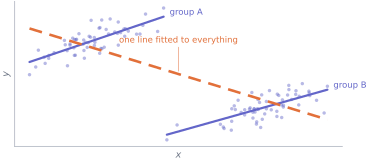
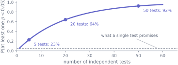

Every technique in this track can be executed perfectly and still produce a confident, reproducible, wrong answer. That is not a flaw in the techniques; it is what happens when a correct calculation is pointed at the wrong question, or run on a sample selected in a way nobody wrote down, or repeated until something interesting appears.
The failures in this unit are not exotic. They are the ordinary ones, they account for most of the retracted findings you will read about during your degree, and every one of them is visible in advance if you know the shape to look for. This is the unit that makes the previous eleven usable.
12.1 Before you start
You should be able to:
fit and interpret a straight line with an interval on its slope — S11;
read a \(p\)-value and state what it is conditional on — S9;
name the unit, population, estimand and design of a question — S1.
Quick check. A test is significant at \(p < 0.05\). Twenty independent tests are run on data where nothing is going on. How many significant results would you expect, and what is the chance of at least one?
TipShow the answer
You expect \(20 \times 0.05 = 1\). The chance of at least one is \(1 - 0.95^{20} = 0.64\).
So in a study with twenty comparisons and no real effects anywhere, the odds are roughly two to one that you will find something to write up. That single calculation is the engine behind a large fraction of this unit.
12.2 The idea
The cohort used throughout these notes contains a planted trap, and by now you have walked into it four times.
import numpy as npimport pandas as pdfrom scipy import statscohort = pd.read_csv("data/cohort.csv")scored = cohort[cohort["final_score"].between(0, 100)]grouped = scored.dropna(subset=["background"])pooled = stats.linregress(scored["hours_practice"], scored["final_score"])print(f"pooled slope, all {len(scored)} students: {pooled.slope:+.4f} marks per hour")for name, part in grouped.groupby("background"): within = stats.linregress(part["hours_practice"], part["final_score"])print(f" {name:<24} n = {len(part):>3}{within.slope:+.4f}")
pooled slope, all 238 students: -0.2408 marks per hour
Computing n = 69 +0.6624
Engineering n = 36 +0.8454
Life sciences n = 57 +1.1526
Mathematics or Physics n = 36 +1.0112
Social sciences n = 39 +1.3445
Pooled, practice looks harmful. Within every background group, it looks helpful, by between roughly three and five times as much as the pooled slope says it hurts. This is Simpson’s paradox: an association that reverses when a third variable is taken into account.

Figure 40.1: The mechanism, drawn cleanly. Two groups, each with a rising relationship inside it. The left-hand group sits higher on the vertical axis and the right-hand group lower, so the two clouds are offset along a downward diagonal — and a line fitted to everything follows the offset between the groups rather than the trend inside them.
The mechanism is not mysterious. Students from quantitative backgrounds start further ahead and practise less; students from other backgrounds start further behind and practise more. Pooling the two puts a strong negative between-group pattern on top of a positive within-group one, and the between-group pattern wins.
Nothing in the pooled analysis is wrong. The slope is correctly computed, its interval is honest, its \(p\)-value is small. It answers a question — among these 238 students, how does score vary with practice hours? — and that question is almost never the one anybody wanted answered.
12.3 The mechanics
Confounding
Simpson’s paradox is the dramatic case of a general problem. A confounder is a common cause: something that influences both the thing you varied and the thing you measured. Its influence is credited to whatever you happened to put in your model.
“Related to both” is not enough to make a variable a confounder, and the difference decides what to do about it. A variable on the causal path from your predictor to your outcome is a mediator, and adjusting for it changes which question you are answering rather than removing a bias. A variable that is a consequence of both is a collider, and adjusting for it manufactures a bias that was not there. Which kind you are looking at is a claim about how the world works, and no amount of data settles it.
There are three responses, in decreasing order of strength.
Randomise. If treatment is assigned by a coin, no variable — measured or not — can be systematically related to it. This is why experiments are worth their cost.
Adjust. Include the confounder in the model, or compare within its levels, as the group-by-group fits above do. This works only for confounders you thought of and measured.
Say so. If neither is available, state which confounders you could not rule out and in which direction each would bias the answer.
The third is not a failure. It is what an honest observational analysis looks like, and it is far more useful than an unqualified claim.
Selection, and the sample you did not see
S1 warned that a design decides which population an answer is about. The failures come in a family:
Self-selection — people who respond differ from those who do not.
Survivorship — you only see the units that made it: the funds still trading, the customers who did not leave, the aircraft that came back.
Collider bias — conditioning on a consequence of two variables creates an association between them that does not exist in the population. Restrict attention to students who were admitted, and admission criteria will manufacture a negative relationship between the things that earn admission.
Sample size does not help with any of them; it makes the wrong answer more precise.
Multiple comparisons
Each test at \(\alpha = 0.05\) has a one-in-twenty false-positive rate. Run many and false positives become the expected outcome rather than the exception.

Figure 40.2: The probability of at least one significant result when nothing at all is going on, against the number of independent tests run. At five tests it is already better than one in five; by twenty it is nearly two in three. Nothing about any individual test has changed.
The count that matters is every comparison you could have made, not the ones you wrote down. Trying three outcome measures, two subgroups and two ways of excluding outliers is twelve analyses even if you report one. This is the “garden of forking paths”, and it does its damage without anyone intending to cheat: each decision felt reasonable at the time, and each was made after seeing the data.
Two repairs. Bonferroni: test at \(\alpha/k\) for \(k\) comparisons, which controls the chance of any false positive and costs power. False discovery rate (Benjamini–Hochberg): control the expected proportion of your discoveries that are false — an average across many studies, not a guarantee about yours — which is usually the more sensible target when screening many hypotheses. Both are far less important than the habit of saying how many comparisons were made.
Base rates, again
S4 showed that a good test for a rare condition mostly produces false positives. Replace “condition” with “true hypothesis” and the same arithmetic applies to research.
If a fraction \(\pi\) of the hypotheses in a field are true, a test with power \(1 - \beta\) and level \(\alpha\) produces true positives at rate \((1-\beta)\pi\) and false ones at rate \(\alpha(1 - \pi)\), so
Figure 40.3: The chance that a significant finding is true, against the fraction of hypotheses in the field that are true, at the conventional 5% level. Even with 80% power, a field in which one hypothesis in ten holds up produces significant findings that are right only about two thirds of the time — and at 50% power, barely half.
Two things follow. The \(p\)-value alone cannot tell you how likely a finding is to be true, because two of the three numbers in that formula are properties of the field rather than of your study. Read them off the figure: with 80% power and one hypothesis in ten holding up, 64% of significant findings are real; drop the prior to one in twenty and it is 46%; drop the power to 50% as well and it is 35%. And power is not just about your own study: low power raises the share of published findings that are false, because it shrinks the numerator while leaving the false-positive rate alone.
Regression to the mean
If a measurement is part signal and part noise, the units that scored highest were partly lucky, and on a second measurement they will average closer to the middle. This happens with no cause at all, and it is routinely mistaken for one.
It is why the “worst-performing hospitals” improve after an intervention, why the sequel to a breakout success disappoints, and why anyone who praises after a good outcome and criticises after a bad one will conclude that criticism works.
The defence is a control group. Without one you cannot separate the effect of what you did from the movement that would have happened anyway.
Overfitting
A model with enough freedom can fit any dataset exactly, including its noise. It will then perform badly on data it has not seen. The symptom is a gap between performance on the data you fitted and on data you held back; the defence is to hold data back before you start, and never to touch it until the model is final.
12.4 Worked example
Three failures, on the cohort.
One: the reversal, quantified. Fit the practice slope with and without the information about where each student started.
Adding one column moves the coefficient on practice from \(-0.24\) to \(+0.92\) marks per hour. Neither fit is a mistake. The first answers “how does score vary with practice across the cohort?”, the second “how does score vary with practice among students who arrived equally prepared?” — and only the second is close to the question a student asking whether to practise actually has.
Two: torturing the data. Split the cohort at random — a variable that cannot possibly matter — and test whether the two halves differ. Do it twenty times.
rng = np.random.default_rng(2026)p_values = np.array([ stats.ttest_ind(score[flag], score[~flag], equal_var=False).pvaluefor flag in (rng.integers(0, 2, score.size).astype(bool) for _ inrange(20))])print(f"20 random splits of the cohort")print(f" smallest p {p_values.min():.4f}")print(f" number below 0.05 {(p_values <0.05).sum()}")print(f" Bonferroni threshold for 20 tests: {0.05/20:.4f}")
20 random splits of the cohort
smallest p 0.0136
number below 0.05 1
Bonferroni threshold for 20 tests: 0.0025
One split in twenty comes out “significant” at \(p = 0.014\), and a report of that split alone — “students in group X scored significantly higher” — would be entirely true about the arithmetic and entirely false about the world. Against the Bonferroni threshold of 0.0025 it survives nothing.
Three: regression to the mean. Take the students who scored highest on the arrival diagnostic and follow them to the final. Both variables are standardised, so the comparison is like for like.
z_diagnostic = (diagnostic - diagnostic.mean()) / diagnostic.std(ddof=1)z_final = (score - score.mean()) / score.std(ddof=1)print(f"correlation between the two: {np.corrcoef(z_diagnostic, z_final)[0, 1]:.4f}\n")for label, mask in [("top 10% on arrival", z_diagnostic >= np.quantile(z_diagnostic, 0.9)), ("bottom 10% on arrival", z_diagnostic <= np.quantile(z_diagnostic, 0.1))]:print(f"{label:<24} n = {mask.sum():>3} "f"diagnostic {z_diagnostic[mask].mean():+.3f} sd "f"final {z_final[mask].mean():+.3f} sd")
correlation between the two: 0.6579
top 10% on arrival n = 24 diagnostic +1.700 sd final +1.428 sd
bottom 10% on arrival n = 24 diagnostic -1.491 sd final -0.709 sd
The strongest starters were 1.70 standard deviations above average on arrival and 1.43 above it at the end. The weakest were 1.49 below on arrival and 0.71 below at the end. Both groups moved towards the middle, and nobody did anything to them.
Now imagine the department had run a support programme for the weakest tenth. Their improvement — most of the way back to average — would have looked like a triumph, and essentially all of it would have happened anyway.
12.5 Try it yourself
Exercise 1 A hospital reports that its overall surgical survival rate is lower than a neighbouring hospital’s, but that its survival rate is higher for every individual severity category.
Is one of the two figures wrong?
What explains it?
Which figure should a patient use?
TipShow the solution
No. Both can be correct simultaneously; this is Simpson’s paradox with the roles of practice and background played by severity.
The hospital with the lower overall rate almost certainly takes more severe cases. Severity drives both which hospital you go to and whether you survive, so pooling across severity credits the case mix to the hospital.
The category-specific figures, matched to their own severity — that is the comparison that holds the confounder fixed. The overall figure answers a question about the two hospitals’ patients, not about their surgeons.
Worth adding: this is exactly why publishing unadjusted mortality league tables creates an incentive to refuse difficult cases, and why the adjusted figures are the ones that get published.
Exercise 2 A team tests 4 outcome measures in 3 subgroups and reports the one result with \(p = 0.03\) as their finding.
How many comparisons were made?
Roughly what is the chance of at least one \(p < 0.05\) if nothing is going on?
What should they have written?
TipShow the solution
\(4 \times 3 = 12\) at minimum — and more if any decisions about exclusions or transformations were made after seeing the data.
\(1 - 0.95^{12} = 0.46\), if the twelve tests are independent. Close to a coin flip, from a study in which nothing whatever is going on.
They will not be exactly independent — the same people appear in several comparisons, and the four outcomes are probably related — which pulls the number down. It does not pull it down to anything reassuring, and the honest version of the calculation is still “we made twelve comparisons”.
Something like: “We examined 4 outcomes in 3 subgroups. One comparison reached \(p = 0.03\) (uncorrected); against a Bonferroni threshold of 0.0042 it is not significant, and we report it as a hypothesis for a future study rather than as a finding.”
Note what is not required: they do not have to hide the result. They have to report the denominator. A result that arrives with its number of comparisons attached is useful; the same result without it is misleading.
Exercise 3 During the Second World War, returning aircraft were examined to see where they had been hit, so that armour could be added where the damage was densest.
What is wrong with the plan?
Where should the armour go?
Name a modern analysis with the same structure.
TipShow the solution
Survivorship bias. The sample consists only of aircraft that came back. Hits are presumably scattered fairly evenly, so the places where returning aircraft show few holes are the places where a hit meant not returning.
Where the returning aircraft show no damage — the engines, in the original study. The observed pattern is a map of survivable hits.
Many: studying only customers who did not churn, only funds that still exist, only patients who completed a course of treatment, only startups that are still trading. In every case the units that would have been most informative are the ones missing from the file, and no amount of data on the survivors recovers them.
12.6 Check it in Python
The multiple-comparisons arithmetic is worth watching rather than believing. Here nothing is going on anywhere — two groups drawn from the same population — and we count how often at least one test in a batch comes out significant.
rng = np.random.default_rng(7)for tests in [1, 5, 20]: hits =0for _ inrange(4000): batch = [stats.ttest_ind(rng.normal(0, 1, 30), rng.normal(0, 1, 30)).pvaluefor _ inrange(tests)] hits +=min(batch) <0.05print(f"{tests:>2} tests per study: at least one significant in "f"{100*hits/4000:5.1f}% of studies (formula {100*(1-0.95**tests):5.1f}%)")
1 tests per study: at least one significant in 5.5% of studies (formula 5.0%)
5 tests per study: at least one significant in 23.5% of studies (formula 22.6%)
20 tests per study: at least one significant in 63.7% of studies (formula 64.2%)
And now the check that fails — the one this whole unit is about. It is tempting to believe that if an association is real and strong in the data, adjusting for another variable can only change it a little:
simple, *_ = np.linalg.lstsq(np.column_stack([ones, hours]), score, rcond=None)adjusted, *_ = np.linalg.lstsq(np.column_stack([ones, hours, diagnostic]), score, rcond=None)assert np.sign(simple[1]) == np.sign(adjusted[1]), (f"the practice coefficient is {simple[1]:+.4f} on its own and "f"{adjusted[1]:+.4f} once the arrival diagnostic is included — "f"opposite signs, same data")
---------------------------------------------------------------------------AssertionError Traceback (most recent call last)
CellIn[9], line 4 1 simple, *_ = np.linalg.lstsq(np.column_stack([ones, hours]), score, rcond=None)
2 adjusted, *_ = np.linalg.lstsq(np.column_stack([ones, hours, diagnostic]),
3 score, rcond=None)
----> 4assert np.sign(simple[1]) == np.sign(adjusted[1]), (
5f"the practice coefficient is {simple[1]:+.4f} on its own and " 6f"{adjusted[1]:+.4f} once the arrival diagnostic is included — " 7f"opposite signs, same data" 8 )
AssertionError: the practice coefficient is -0.2408 on its own and +0.9156 once the arrival diagnostic is included — opposite signs, same data
Not a little: the opposite direction. There is no rule that says adding a variable makes a small change. If the added variable really is a confounder — not a mediator or a collider, which the section above warned about — the change measures how much confounding there was.
Finally, regression to the mean, on data with no relationship between the two occasions except noise around a shared underlying ability:
rng = np.random.default_rng(3)ability = rng.normal(0, 1, 5000)first = ability + rng.normal(0, 1, 5000) # nothing happens between the twosecond = ability + rng.normal(0, 1, 5000)# Standardise both occasions, so the two are on a common scale.z_first = (first - first.mean()) / first.std(ddof=1)z_second = (second - second.mean()) / second.std(ddof=1)worst = z_first <= np.quantile(z_first, 0.1)print(f"bottom 10% at time 1: {z_first[worst].mean():+.3f} sd"f" -> time 2 {z_second[worst].mean():+.3f} sd")print(f"apparent 'improvement': "f"{z_second[worst].mean() - z_first[worst].mean():+.3f} sd, "f"from an intervention that did not exist")
bottom 10% at time 1: -1.747 sd -> time 2 -0.932 sd
apparent 'improvement': +0.815 sd, from an intervention that did not exist
Nothing was done to anyone. The improvement is entirely the noise that put them at the bottom in the first place, failing to repeat itself.
12.7 Common wrong turns
Where this usually goes wrong
Reporting a pooled result when the groups disagree
If the direction reverses inside subgroups, the pooled number is not a summary of anything anyone asked about. Report both, and say which question each answers.
Adjusting for everything you have
Adjustment is not automatically safer. Conditioning on a variable that is a consequence of both your predictor and your outcome creates bias rather than removing it. Which variables to adjust for is a question about how the world works, not about which columns are in the file.
Counting only the tests you reported
The relevant number is every comparison you could have made, including decisions about exclusions and transformations taken after seeing the data. Report the denominator.
Explaining regression to the mean
If you selected units for being extreme, expect them to move towards the middle next time. Attributing that movement to whatever you did in between requires a control group that was equally extreme and left alone.
Treating a large sample as protection
Size fixes sampling noise and nothing else. Confounding, selection and survivorship all survive intact into a dataset of any size, and become harder to argue with because the intervals are so tight.
Evaluating a model on the data you fitted
Any sufficiently flexible model fits its training data. Hold data back before you start, and do not look at it until the model is final — including not looking at it “just to check”.
Believing that a significant result is probably true
How likely it is to be true depends on three numbers — the fraction of hypotheses in the field that hold up, the power, and \(\alpha\) — and a \(p\)-value below \(\alpha\) tells you only about the last. In an exploratory field with modest power the share of significant findings that are false can easily exceed half. That is base rates, and it is arithmetic rather than cynicism.
12.8 Check yourself
Answers are at the foot of the page. Give a reason as well as an answer.
A study finds a positive association between coffee and heart disease. Which would most change your interpretation?
A larger sample
A smaller \(p\)-value
Information about smoking
A higher \(R^2\)
A larger sample makes the estimate more precise. Would it remove a bias?
A smaller \(p\)-value makes it more certain there is an association, not that coffee is its cause.
A tighter fit does not tell you why the two variables move together.
Ten subgroups are tested and one gives \(p = 0.04\). How much evidence is that?
A school selects its 20 weakest readers for a programme. After a term they have improved relative to the school average. Did the programme work?
Adding a variable to a regression changes a coefficient’s sign. Which fit is right?
Why does low statistical power make the published literature less reliable, rather than just making individual studies less informative?
TipShow the answers
(c). Smoking is associated with both coffee drinking and heart disease, so it is a candidate confounder, and the association could be entirely its doing. (a), (b) and (d) all make the estimate more precise or the fit tighter without touching the reason it might be wrong — which is the standard shape of this unit’s lesson.
Very little on its own. With ten tests, the chance of at least one \(p < 0.05\) under no effect at all is \(1 - 0.95^{10} = 0.40\). Reported with its denominator, and treated as a hypothesis to test on new data, it is worth something. Reported alone as a finding, it is close to worthless.
You cannot tell. They were selected for being extreme, so regression to the mean predicts improvement with no programme at all. Without a comparison group of equally weak readers who did not take part, the programme’s effect and the statistical artefact are inseparable.
Both are correct fits, and they answer different questions. The unadjusted coefficient describes how the outcome varies with the predictor across the whole sample; the adjusted one describes how it varies among units alike on the added variable. Which one you want depends on what role the added variable plays: a common cause of predictor and outcome (adjust, to remove confounding); something on the path from predictor to outcome (adjusting is legitimate but answers a narrower question — the part of the effect that does not run through it); or a consequence of both (adjusting creates a bias that was not there). Nothing in the regression output distinguishes the three.
Because power sits in the numerator of \(P(\text{true} \mid \text{significant})\). Halving power halves the rate of true positives while leaving the false-positive rate at \(\alpha\), so the proportion of significant findings that are false goes up. A literature built from underpowered studies contains a higher share of false claims than the same literature built from well-powered ones, even with everyone behaving honestly.
Where this shows up next
This is the last unit of the Statistics track, and the habits in it are the ones worth carrying into everything else you do.
Write the question down before you touch the data — S1. Report an estimate with an interval, in the units of the thing measured — S8, S10. Say how many comparisons you made. Say which confounders you could not rule out. And when a result surprises you, look for the third variable before you look for a publisher.